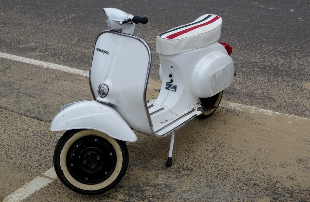

You come to and see the river. It stand's thick and flowing like an old man. It's late in the afternoon around 4ish. A small barge and a Carnival crew ship flow down the river.You get a text on your phone… It’s Wayne.
So Happy you’re finally visiting! Why don’t we meet me at the Verti Mart for dinner in 45 minutes!
“Gosh dang it Wayne I’ll have to get another taxi…” you think to yourself. “The first one from Louis Armstrong was expensive enough….”
Another Text
Turn Around, and enjoy your new set of wheels!
